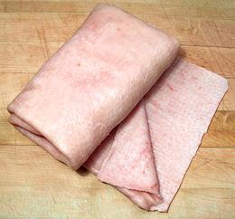
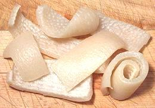
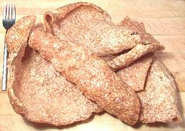
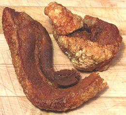

SAFARI
Users
Fresh Pig Skins
 [Cuero de Puerco]
Because the skins are commercially important, both for selling fresh and for processing into Pork Rinds, meat processors have special machines to remove the fat from the inside side. Buying commercially prepared pig skins avoids the difficult and tedious job of scraping the fat by hand. The roll shown is from a pork belly. Hide recovered from other parts of the pig may be thicker and will be folded rather than rolled.
Buying:
Your best chance of finding commercial pig skins is in a Carniceria (Mexican meat market) or meat section of a regular market that serves a heavily Mexican community.Cooking:
For most recipes, such as Thai pig skin salads, pork belly skin should be simmered for about 45 minutes. Skin from other parts of the pig may take a bit longer. It is done when still slightly chewy, but not too much if it will be served cold because it will firm up quite a bit when cold. To make chicharrónes the skin is first thoroughly dried.Pickled Pig Skins
 Jars of pickled pig skins are often found in markets serving a Mexican community. Unfortunately some brands are badly made, overcooked until mushy and packed with too much vinegar. A proper pickled pig skin should be firm, moderately chewy and pickled in a moderate vinegar brine. The photo specimens were by Faraon, a reliable specialty distributor in Los Angeles, and they were excellent. See also our recipe Pickled Pig Skins for how to make them yourself.
Pork Rinds - Chicharrón Delgado
 [Chicharrón de Cerdo]
A popular snack in the United states, pork skins dried, then deep fried. Consumption peaked very high during the Atkins diet craze but has now dropped back to a minor item. The term "delgado" means thin, to differentiate from "gordito", thick. Caution: in Spanish speaking countries other than Mexico and the U.S. "Chicharrón" can mean something quite different, and not always involving pig skins or even pig. Chicharrón describes a cooking method, not an ingredient.
The photo specimens were up to 15 inches long and weighed about 3-1/2
ounces per piece, costing US $4.99/pound, They were purchased from a large
market serving Altadena, CA, a mixed white, Mexican and black community
in the process of gentrification. Purchased this way they tend to be less
salty than packaged products, salt being the main health complaint against
this snack food (they have no carbs, high protein and less fat than potato
chips). This form is not ideal for
Chicharrónes en Salsa Verde as they become too
chewy when exposed to the salsa, for that you want the lightest,
fluffiest chicharrónes you can get. For the ultimate in light and
fluffy make them yourself by our "no splatter" recipe for
Chicharrónes.
Chicharrón Gordito
 [Chicharrón de Puerco]
The name meaning "thick", these pork rinds have the fat layer and some
meat included. The place I bought them from keeps them quite hot, but they
are still much better purchased from a street vendor right out of the pan
when the meat part will still be very tender. They are not as fatty as you'd
think because most of the fat is rendered out, but they are fattier than
chicharrónes delgado.